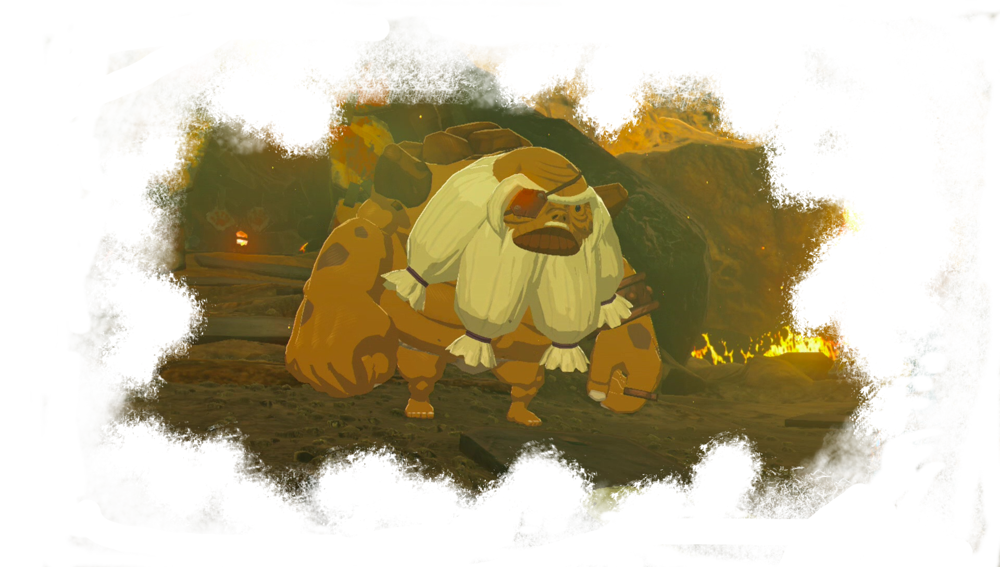
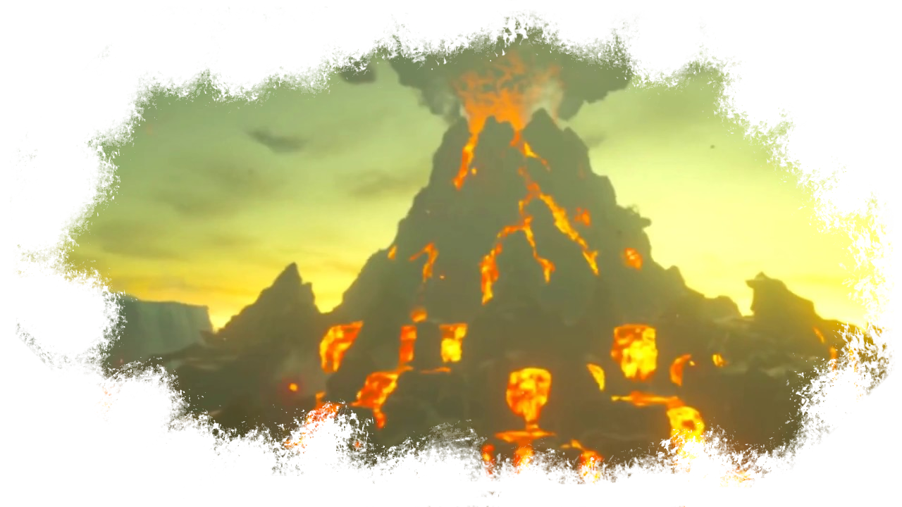
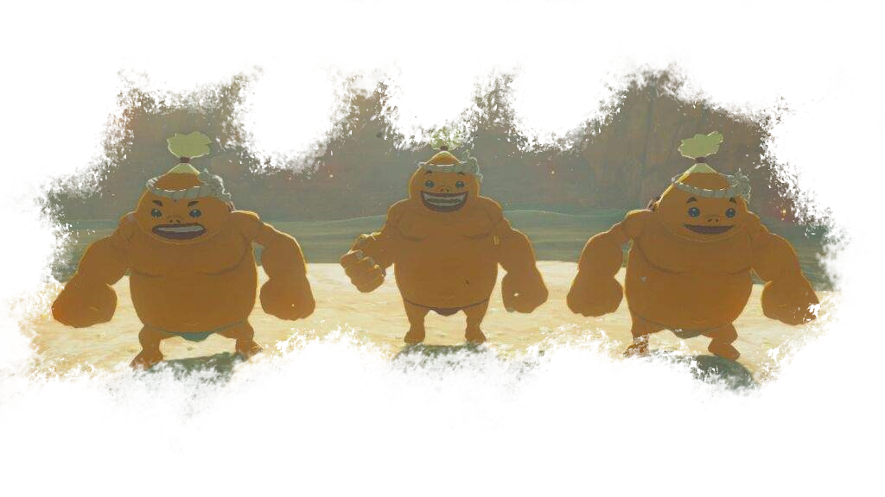
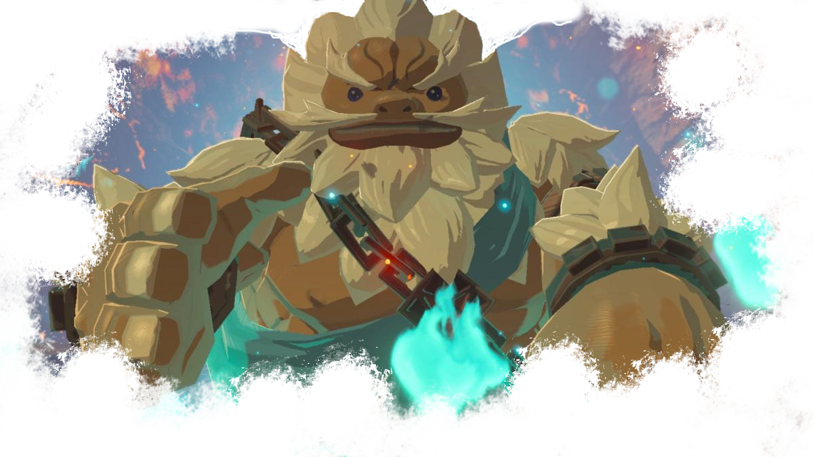

Les Gorons

Les gorons sont un peuple non humain à la peau couleur glaise. Légèrement plus grands que les Hyliens mais bien plus massifs, ces mastodontes ont une force brute impressionnante. Les gorons ont une énorme carapace de pierre sur le dos et la capacité de se rouler en boule dès qu'ils se sentent en danger, ou simplement pour dévaler les montagnes à toute vitesse. Quand un goron est lancé, il n'y a pas grand chose qui puisse l'arrêter!
Les Gorons sont des mineurs. Ils ont une appétence toute particulière pour les minerais, puisqu'en plus de s'en servir au quotidien, ils constituent leur alimentation. Ils sont friands de certaines roches ou pierres, mais refusent d'en manger certaines qu'ils n'aiment pas. De plus, ils sont naturellement très résistants à la chaleur, mêmes les chaleurs les plus extrêmes. Vivre sur un volcan éveillé n'est absolument pas un problème pour eux. Ils sont également d'excellent forgerons. Leurs armes et armures ont une réputation qui n'est pas déméritée. D'ailleurs, c'est grâce à une armure de style goron que Link peut supporter la chaleur extrême du village goron et de la montagne de la mort.

Les gorons vivent dans la montagne de la mort, dans la province d'Ordinn, au nord-ouest d'Hyrule. Dirigés par Buldo, le chef du village, ce peuple est isolé des autres et naturellement peu intéressé par les autres cultures. Ce peuple est très gentil et profondément pacifique. Bien que bourrus, ils ne feraient pas de mal à une mouche, sauf s'ils y sont contraints et forcés. Cependant, mieux vaut ne pas se mettre un goron à dos: leur puissance de destruction peut être bien plus importante que n'importe quelle autre race, grâce à leur force pure bien-sûr et leur capacité à se mettre en boule, mais également grâce à leur culture portée sur les explosifs.
Beaucoup de gorons restent sur leur montagne et vivent à priximité de leur village. Mais certains ont décidé de parcourir le monde et sont des marchands itinérants ou des voyageurs. Il y a même un goron dans la cité gerudo, alors que normalement les hommes sont interdits. Peut-être est-ce parce qu'ils ne sont pas humanoïdes à proprement parler?

Quand Link revient dans la région où vivent les gorons, Vah'Rudania, leur créature Divine, est devenue incontrôlable et menace le village avec le volcan. Link va donc collaborer avec Yunobo, descendant de Daruk, pour reprendre le contrôle du monstre mécanique et ainsi calmer le volcan et sauver l'âme de son ami disparu au combat.
Le goron le plus connu du royaume, symbole de sa race toute entière est bien évidemment Daruk, élu par la famille royale pour être le prodige pilotant la salamandre géante. Yunobo vit dans l'ombre de son ancêtre et a du mal à s'affirmer. Pourtant, le jeune Goron peut devenir un être d'exception, d'autant plus qu'il a hérité du pouvoir de Daruk, son bouclier le rendant invulnérable.
